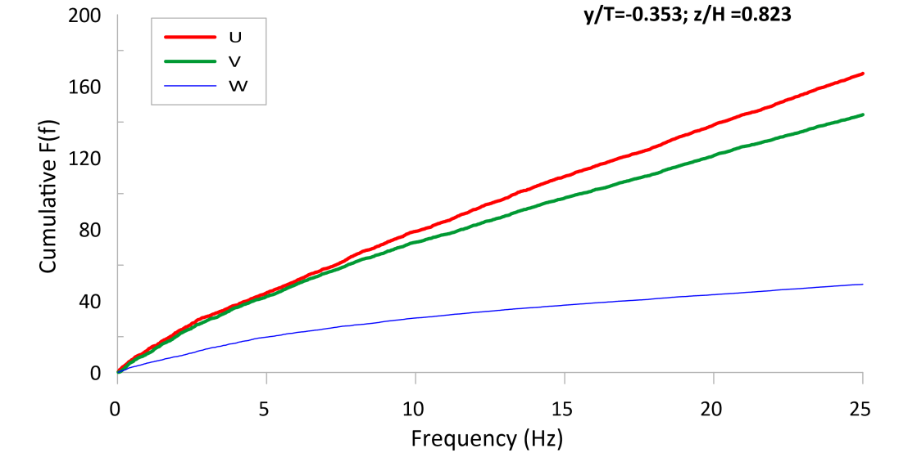

Analysis of Apparent Shear Stress and Turbulence in Meandering Compound Flows
The flow in a meandering compound channel is highly three-dimensional, which leads to complexity in the estimation of its stage-discharge relationship. Also, the discharge in a compound meandering channel is greatly affected by the interaction between the flow in the main channel and the floodplains. Therefore, the conventional discharge estimation methods fail to predict the discharges to a satisfactory level of accuracy.
Meandering Channel at Hydraulic Lab, NIT Rourkela
Stage-discharge experiments have been performed in a meandering compound channel having a sinuosity of 1.35, and the accuracy of the traditional discharge prediction methods was analyzed for this dataset and also for various other datasets sourced from the literature. It was identified that conventional discharge prediction methods tend to over-estimate the discharges by almost 45-50%. So, an attempt has been made to develop a new discharge estimation model, based on the concept of energy loss due to apparent shear stress at the channel interfaces. An error analysis has been carried out for the conventional and the proposed discharge estimation models, and it was observed that the proposed model was better at predicting the discharge.
Also, velocity and turbulence measurements have been carried out, using an Acoustic Doppler Velocimeter (ADV), at the bankfull interface for β = 0.12, 0.16, 0.216 and 0.32, along the half wavelength of the meander. The results obtained from this study include the distributions of streamwise, lateral and vertical velocities. The distributions of turbulence intensities and the turbulent kinetic have been analyzed, at the bankfull interface for the length of the meander belt region. The distributions of various Reynolds shear stresses (−ρu’v’, −ρv’w’ and −ρu’w’), at the bankfull interface have been studied to arrive at the conclusion that the crossover region generates a high amount of turbulence instigating significant magnitudes of interfacial shear stresses (τzx and τzy) at the bankfull level.
web page was created with Mobirise template